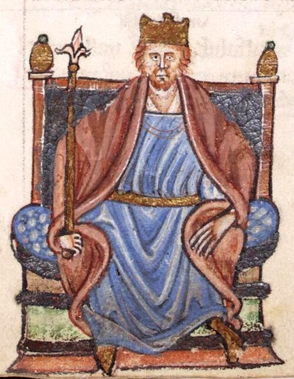
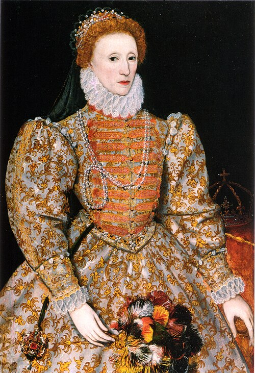
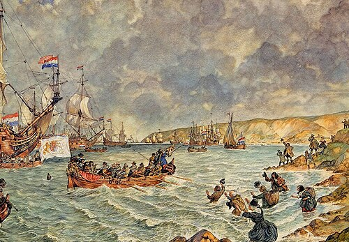
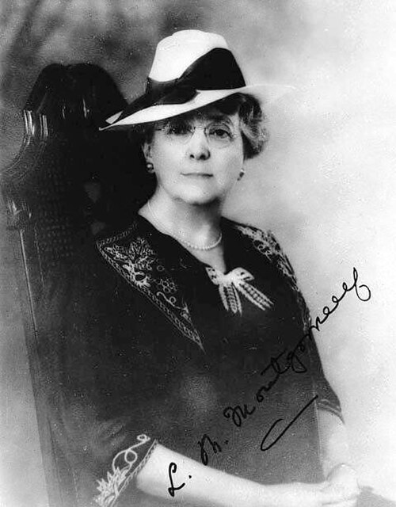
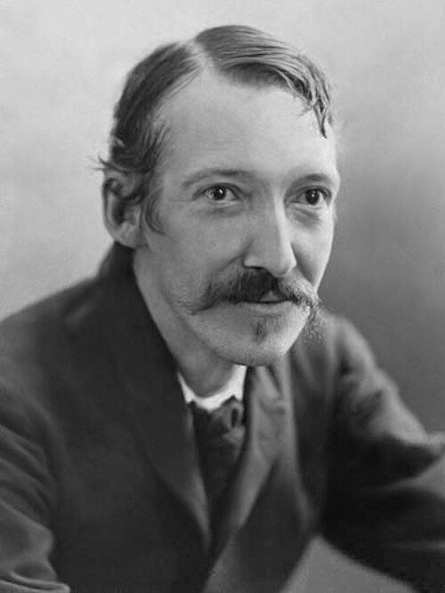
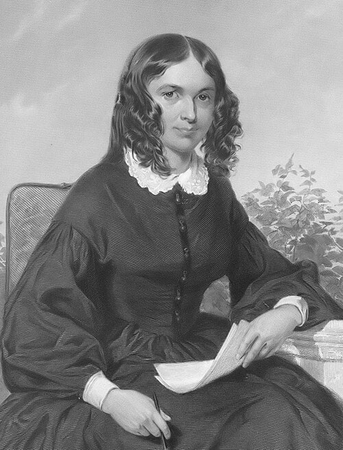
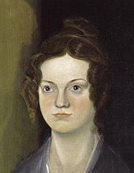

«Высшая проба» after Round 2 · the paper again: Задание 10 (her six events), Задание 5 (a sports life), Задание 9 (a woman writer)
📅 November 2026 · Lesson 21 · history: the six events she remembers from the paper, the dates around each one, and how an event is worded · castles and cathedrals · sentence ordering: the boy who became a coach · culture: women writers, islands, and the Dickens / Dickinson trap · new from Olympway: monarchs’ parents, birthdays, Wilde, Tasks 92 and 98
Blocks checked: 0 / 0
Points today: 0 / 0
👩🏫 Teacher only · Lesson 21 plan · 60 min (tap to open / close)
The thread: the houses and the century rule from memory → six event cards (the paper’s events, each with the dates around it) → which date is the question asking about → castles and cathedrals → families → two Задание 10 sets built like her paper → Olympway 98 → Задание 5 on Knute Rockne → three women writers, Stevenson, and the Dickinson trap → decode → a full Задание 9 on L. M. Montgomery.
0–5 · Warm-up: “what was on your paper?” (1) · six monarchs → houses (2) · six century traps (2).
5–25 · History: how an event is worded (2) · six cards (7) · which date? (3) · cathedrals (2) · families (2) · Задание 10 set 1, her paper (2) · set 2, the traps (2).
25–37 · Задание 5: the links reminder (1) · Rockne, 10 of 12, timed 8 min (8) · reasons aloud (3).
37–40 · Break.
40–58 · Culture: the Dickens / Dickinson trap (2) · four cards (7) · decode the clue (2) · Задание 9 on Montgomery, timed 5 min (5) · what was your text? (2).
58–60 · Homework: open the tab together. Olympway 98 moves to homework if History runs long.
👩🏫 Teacher only · Lesson notes: what this lesson teaches and why (tap to open / close)
1 · Where this lesson sits
Polina has sat Round 2. This lesson treats her report of the paper as a map of what the setters like and drills it as if she were sitting the same paper again. She remembered three blocks. Задание 10, events → centuries: Oscar Wilde’s birthday, the year Windsor Castle was built, something about Henry II, something about Elizabeth I (“just ‘Elizabeth’, so probably the First”), the building of a cathedral that was not St Paul’s, and the Glorious Revolution. Задание 5, the 20-point sentence-ordering task: a boy who first lived in a town beginning with B and ran and trained alone in the mornings, then moved with his parents, found he was not fit enough for basketball and “the game with a leather ball”, became famous, was written about in the newspaper, got into the team and invented a special tactic. Задание 9: a woman who wrote short poems and stories, had a husband, lost her parents early, and after their death moved with her husband to some islands. She guessed “someone with the same surname as Charles Dickens”.
Two things follow. (1) In Задание 10 the setters do not ask for the famous date. They ask for a birth (Wilde 1854), a beginning of construction (Windsor c. 1070; a cathedral), an accession or coronation (Henry II 1154, Elizabeth I 1558/59). The demo paper had the same habit: “the birth of Christopher Marlowe”, “the beginning of construction of the first Norman stone castle in Wales”, “the end of the Tudor dynasty”, “Henry II’s ascension to the throne”. So each card gives a ladder of dates (born, crowned, the famous event, died, built, rebuilt, burnt), and the “Which date?” task trains reading the wording. The killer traps are Elizabeth I’s death = 1603 = 17th c. (and that is also “the end of the Tudor dynasty” in the demo), Wilde’s death = 1900 = 19th c., and Henry II = 12th c. (not Henry VIII). (2) Задание 9 can be about anyone in the English-speaking world, Canada included, and the trap is a famous name that only sounds right. Dickinson never married and never left Amherst, so a text with a husband and islands cannot be her.
2 · What I found in Olympway (Gulov) for these topics
I went through the whole collection (425 tasks; the history and culture tasks are 86–98, 141, 160–162, 205, 220–222, 243–246 and the BRITISH MONARCHS pairs 293–294, 323–324, 353–354, 383–384, 413–414). What matches her paper, and what is new:
Task 98 [ERA, 11th–15th] has “Henry II crowned at Westminster Abbey” (12th): almost certainly the kind of Henry II item she saw. Used in class (8 of 15 lines: only what she was taught).
Task 92 has “Glorious Revolution — 1688” next to Act of Union 1707, the Slave Trade Act 1807, the Bessemer Process 1855 and the Treaty of Edinburgh–Northampton 1328. Task 97 has it as a century item (17th). Used in homework (taught items only).
Task 94 is a list of castle construction dates (Cambridge 1068, Leicester, Nottingham …): the same idea as “when was Windsor built”. The answer pattern is the point: almost every royal castle in England was begun in the 11th century, right after 1066.
Task 246: birthdays as exact dates (Elizabeth I 7 Sept 1533, Mary I 18 Feb 1516, Victoria 24 May 1819, Jane Austen and Catherine of Aragon both 16 December). Wilde’s birthday on her paper is the same kind of item. In homework with a table to learn first.
Task 243: a gap text on Wilde: Irish · early death · De Profundis written in prison (1897) · died in Paris at 46 · pardoned under the Policing and Crime Act 2017. All on today’s Wilde card; the task is in homework.
Tasks 324, 354, 414: monarchs’ parents: Henry II ← Geoffrey of Anjou and Empress Matilda; John ← Henry II and Eleanor of Aquitaine; Elizabeth I ← Henry VIII and Anne Boleyn; Henry VIII ← Henry VII and Elizabeth of York. Task 413 gives Henry II 1154–1189 and the House of Angevin. Used in class (“Families”).
Task 141: Canterbury Cathedral is in Kent; Task 205: Wren and St Paul’s (taught in Lesson 16). Cathedrals in general are not drilled in Olympway, so the cathedral table here is mine: the ones a setter would pick when “not St Paul’s”.
Task 160: Wilde studied at Oxford (Magdalen); on the card.
Nothing in Olympway matches the two reading texts (there is no basketball or island-poet text in the book), so the Задание 5 and Задание 9 texts below are new, written in the exam format.
3 · History: the six events
Windsor Castle: begun c. 1070 by William the Conqueror (11th), a wooden castle on a mound, one of a ring of castles around London; rebuilt in stone by Henry II (1170s, 12th); St George’s Chapel begun 1475 by Edward IV (15th); the royal family took the name Windsor in 1917; the fire of 1992 (20th); Elizabeth II buried in St George’s Chapel in 2022. The demo item “the first Norman stone castle in Wales” is Chepstow, begun 1067 (11th). Henry II: born 1133 in Le Mans; son of Geoffrey, Count of Anjou, and Empress Matilda; married Eleanor of Aquitaine (1152); king in 1154, crowned at Westminster Abbey on 19 December 1154; the first Plantagenet; Thomas Becket murdered in Canterbury Cathedral on 29 December 1170; sons Richard the Lionheart and John; died 1189. Elizabeth I: born at Greenwich on 7 September 1533; queen on 17 November 1558, crowned at Westminster Abbey on 15 January 1559; the Armada 1588; the East India Company 1600 (still 16th); died at Richmond on 24 March 1603 (17th) = the end of the Tudors. The Glorious Revolution:1688; James II (Catholic) has a son; William of Orange, husband of James’s daughter Mary, lands at Torbay in Devon on 5 November 1688; James flees to France; William III and Mary II rule together from 1689; the Bill of Rights 1689; the Battle of the Boyne 1690 in Ireland. Oscar Wilde: born in Dublin on 16 October 1854; died in Paris on 30 November 1900 (19th: 1900 is the last year of the 19th century); pardoned in 2017 (21st). Salisbury Cathedral: begun 1220, finished 1258 (13th); the spire c. 1320 (14th), 123 m, the tallest in Britain; it keeps the best of the four 1215 copies of Magna Carta; Constable painted it.
Russian hooks (on the cards): 1147 Moscow first mentioned / 1154 Henry II · 1533 Ivan IV becomes Grand Prince at three / Elizabeth I born · 1689 Peter I takes power / the Bill of Rights · 1854 the Crimean War / Wilde born.
Keys. Which date: 1 1603 · 2 1154 · 3 1854 · 4 1688 · 5 1170 · 6 1559 · 7 1900 · 8 1689 (extras 1066, 1533). Cathedrals: Salisbury 13th · Liverpool 20th · Durham 11th · Lincoln (tallest building) 14th · Canterbury (first cathedral) 6th · St Paul’s 17th · Westminster Abbey (today’s church) 13th. Families: John ← Henry II and Eleanor · Elizabeth I ← Henry VIII and Anne Boleyn · Henry II ← Geoffrey and Matilda · Mary II ← James II and Anne Hyde · Henry VIII ← Henry VII and Elizabeth of York (extras: Henry VIII and Catherine of Aragon = Mary I; William I and Matilda of Flanders). Set 1 (her paper): Wilde born 19th · Windsor begun 11th · Glorious Revolution 17th · Henry II crowned 12th · Salisbury begun 13th · Elizabeth I crowned 16th (unused 15th, 20th). Set 2 (the traps): Windsor fire 20th · Elizabeth I dies 17th · Becket 12th · Wilde pardoned 21st · Durham begun 11th · Wilde dies 19th · St George’s Chapel 15th · Salisbury spire 14th (unused 13th, 16th). Olympway 98 (8 lines): Henry II crowned 12th · Agincourt 15th · Magna Carta 13th · William crowned 11th · Caxton 15th · Hundred Years’ War 14th · Domesday 11th · Richard to the Crusades 12th.
4 · Задание 5: the boy who became a coach
Her text sounds like a sports biography in the Babe Ruth style of the demo. I can’t tell who it was from her description (it could even be a story), so the practice text is a real life with the same shape: Knute Rockne (1888–1931), born in Voss, near Bergen, Norway; to Chicago at five; too light for football, so he ran; four years at the post office; Notre Dame at 22; in summer 1913 he and Gus Dorais practised passing on a Lake Erie beach; on 1 November 1913 Notre Dame beat Army 35–13 with the forward pass, and the newspapers made it famous; head coach from 1918 (105 wins, 12 losses, 5 ties). The vocabulary she lacked: American football is “the game with a leather ball”, the ball is the pigskin; a coach, a tactic, the forward pass. The key: C H A F K D J B G E; extras I (the pass “was soon forbidden”: the text says the newspapers made it famous and his teams went on winning) and L (“She”: no woman in the text). The “keep” box adds the Задание 9 lateral: in the 1940 film about him, Ronald Reagan played George Gipp, and “Win one for the Gipper” became Reagan’s nickname.
5 · Culture: who was the woman on the island?
From “short poems and stories, a husband, parents who died early, then a move with the husband after their death, islands”, the best fit I can find is L. M. Montgomery (1874–1942): born on Prince Edward Island (Canada); her mother died when she was 21 months old and her father in 1900; she sold hundreds of short poems and stories to magazines before Anne of Green Gables (1908); she married only after her grandmother died (1911) and moved with her husband to Ontario. The direction is the other way round (she left the island), so Polina may have mixed it up, or the text was about someone else. Other people who match parts of it: Robert Louis Stevenson (after his father’s death in 1887 he left Britain with his wife and settled on the islands of Samoa; A Child’s Garden of Verses is a book of little poems), and Elizabeth Barrett Browning (a poet who married secretly and moved abroad with her husband, to Italy). Ask her: was it a “he” or a “she”? Which country? An ocean, or a gulf? Did the text mention a red-haired girl, a map, or a dog? The Dickinson card she knows is the trap: no husband, no move, no islands.
The Culture tab teaches Montgomery, Stevenson and Barrett Browning on cards (Wilde is on the History tab), recalls Dickinson, then decodes. Decode key: 1 Montgomery · 2 Dickinson · 3 Stevenson · 4 Barrett Browning · 5 Wilde · 6 Dickens (extras: Austen, Charlotte Brontë). Задание 9 key (Montgomery): 1 Lucy Maud Montgomery · 2 Prince Edward Island · 3 Anne of Green Gables · 4 Canada · 5 Lewis Carroll (“the immortal Alice”; Twain praised Anne as the dearest child in fiction since Alice). Homework Задание 9 (Stevenson): 1 Robert Louis Stevenson · 2 Edinburgh · 3 Treasure Island · 4 Long John Silver · 5 Jekyll and Hyde. Homework Задание 9 (Montgomery, the second text): 1 Anne Shirley · 2 Cavendish · 3 the Gulf of St Lawrence · 4 Ontario · 5 Mark Twain.
6 · Homework and the decks
Six new V14 cards (Henry II, Elizabeth I, L. M. Montgomery, R. L. Stevenson, Elizabeth Barrett Browning, Knute Rockne) and three new V15 cards (Windsor Castle, Salisbury Cathedral, the Glorious Revolution), built like the others. Then Olympway 246 (birthdays, with the table to learn first), Olympway 243 (Wilde), a mixed Задание 10 set in the demo’s wording (key: 12th · 17th · 11th · 15th · 20th · 19th · 16th · 21st; unused 13th, 14th), Olympway 92 (taught lines only: 1688 · 1707 · 1066 · 1415 · 1815) and the Stevenson Задание 9.
👩🏫 Teacher only · what to say · warm-up
Hello: “Imagine you are sitting the same paper again next week. Today we go back to exactly what you saw: six events, a sports text, a writer on an island.”
What was on your paper: she writes, in one minute, everything she remembers. Keep it: it is the list for the last part of the Culture tab.
Houses: “Every event on your paper hangs on a royal house.” If she stops, the mnemonic: No Plan Like Yours To Study History Wisely.
The century traps: “First two digits plus one, except the round hundreds.” Stop on 1603: “Whose death is that?” (Elizabeth I: the end of the Tudors.)
Warm-up 1 · 1 min
What was on your paper?
Write down everything you remember from Задания 5, 9 and 10: names, places, numbers, single words. Spelling doesn’t matter.
Warm-up 2 · the houses · 2 min
Which royal house?
No Plan Like Yours To Study History Wisely
1Elizabeth I
2Victoria
3William the Conqueror
4Elizabeth II
5Henry II
6James II, who lost his throne in 1688
💡Remember
Henry II (1154) is the first Plantagenet; Henry VIII is a Tudor. Don’t let the Roman numerals blur.
Warm-up 3 · the century rule · 2 min
Six years from your paper
11603
21154
32017
41533
51900
61688
💡The rule
First two digits + 1 (1603 → 17th). A round hundred is the last year of its century: 1900 → 19th, 2000 → 20th.
👩🏫 Teacher only · what to say · Задание 10
The wording: “The paper never says ‘Elizabeth I’. It says the birth of, the coronation of, the death of, the beginning of construction of. Each one is a different year, sometimes a different century.” Read the table together.
The cards: she reads the 📅 ladder of each card aloud. Stop on: “Windsor: who started it, who rebuilt it in stone?” (William I, Henry II) · “Elizabeth I died in 1603: which century, and what else ended then?” (17th; the Tudors) · “Wilde died in 1900: which century?” (19th).
Which date: fast, from the cards. Then cathedrals: “If it’s not St Paul’s, it’s probably one of these.” The rule: the great medieval cathedrals were mostly begun in the 11th or 13th century.
Families: Olympway 324 / 354 / 414 ask for parents. “Henry II’s mother was an empress. Elizabeth I’s mother was executed.”
Set 1: “This is your paper, as you remember it. Two minutes.” Set 2: “Same people, the other dates.”
In class · 20 min
How Задание 10 words an event · 2 min
Which year is the question really asking for?
The paper says
It means
Example
the birth of …
the year the person was born, not when they were famous
the birth of Oscar Wilde → 1854 → 19th
… ascension to the throne / … becomes king
the first year of the reign
Henry II’s ascension → 1154 → 12th
the coronation of …
the crowning, sometimes the next year
Elizabeth I: queen 1558, crowned 1559 → 16th both
the death of … / the end of the … dynasty
the last year
Elizabeth I dies = the end of the Tudors → 1603 → 17th
the beginning of construction of …
the first stone, not the finished building
Salisbury Cathedral: 1220 (finished 1258) → 13th
the completion of …
the last stone
York Minster: begun 1220, completed 1472 → 15th
Meet the events · 7 min
Six things from your paper, and the dates around them
Read each card aloud: the 📅 ladder first, then one 🔎 clue. The ladder is the point: the paper can ask for any rung of it.
Pictures: Wikimedia Commons (public domain, or the free licence named under the picture).
Windsor Castle and the Round Tower (photo: Diliff, CC BY-SA 3.0)
Windsor Castlebegun c. 1070 · 11th c.
Виндзорский замок · on the Thames, west of London, opposite Eton
What: the oldest and largest castle in the world that people still live in. William the Conqueror began it soon after 1066, a wooden fort on a mound, one of a ring of castles around London a day’s march apart. Henry II rebuilt it in stone in the 1170s. The Round Tower stands on the original mound.
📅 c. 1070 begun (11th) · 1170s rebuilt in stone by Henry II (12th) · 1475 St George’s Chapel begun by Edward IV (15th) · 1917 the royal family takes the name Windsor (20th) · 1992 a great fire (20th) · 2022 Elizabeth II buried in St George’s Chapel (21st)
🔎 Clues in a text: a fortress begun by the Norman conqueror · a mound with a round tower · a chapel of the Order of the Garter · a name taken in the First World War instead of a German one · a fire in November 1992
The demo’s twin: “the first Norman stone castle in Wales” = Chepstow, begun 1067 (11th). Nearly every royal castle in England was begun in the 11th century.

Henry II, from a medieval manuscript
Henry IIking 1154–1189 · 12th c.
Генрих II · the first Plantagenet · born in Le Mans, France
Family: son of Geoffrey, Count of Anjou (whose badge, a sprig of broom, planta genista, gave the name Plantagenet) and Empress Matilda, Henry I’s daughter. Husband of Eleanor of Aquitaine; father of Richard the Lionheart and John (Magna Carta). He ruled England and half of France.
Famous for: a quarrel with his friend Thomas Becket, Archbishop of Canterbury. Four knights who heard the angry king (“Will no one rid me of this turbulent priest?”) killed Becket in Canterbury Cathedral. Henry also laid the base of English common law, with travelling judges and juries.
📅 1133 born · 1152 marries Eleanor · 1154 becomes king, crowned at Westminster Abbey on 19 December · 1170 Becket murdered · 1189 dies. All 12th.
🔎 Clues in a text: a king who ruled from Scotland’s border to the Pyrenees · a wife who had been queen of France · an archbishop killed in his own cathedral · two sons who both became kings
🇷🇺 Hook: 1147, Moscow first mentioned; seven years later Henry II is crowned. Trap: Henry II ≠ Henry VIII.
Salisbury Cathedral (photo: wyrdlight, CC BY-SA 3.0)
Salisbury Cathedralbegun 1220 · 13th c.
Солсберийский собор · Wiltshire, near Stonehenge
What: the cathedral moved down from the windy hill of Old Sarum. The first stone was laid in 1220 and the main church was finished in only 38 years, so it is all in one style (Early English Gothic). The spire, added about 1320, is 123 m high, the tallest in Britain.
Inside: the best of the four surviving copies of Magna Carta (1215) and one of the oldest working clocks in the world (c. 1386). John Constable painted it again and again.
📅 1220 begun (13th) · 1258 consecrated (13th) · c. 1320 the spire (14th)
🔎 Clues in a text: the tallest spire in Britain · a copy of the 1215 charter · a cathedral that moved from a hill-fort · painted by the man who painted The Hay Wain
Not St Paul’s? See the table of cathedrals below: it is the list a setter would choose from.

the “Darnley Portrait”, c. 1575
Elizabeth Iqueen 1558–1603 · 16th c.
Елизавета I · the last Tudor · born at Greenwich Palace
Family: daughter of Henry VIII and Anne Boleyn, who was beheaded when Elizabeth was two. Her half-sister Mary I (the daughter of Catherine of Aragon) reigned before her. She never married: “the Virgin Queen”, and Virginia is named after her.
Her reign: the Church of England restored · the defeat of the Spanish Armada · Drake sails round the world · Shakespeare and the Globe · the East India Company. When she died, her cousin’s son James VI of Scotland became James I: the first Stuart.
📅 7 Sept 1533 born (16th) · 17 Nov 1558 becomes queen · 15 Jan 1559 crowned at Westminster Abbey · 1588 the Armada · 1600 the East India Company (still 16th!) · 24 March 1603 dies at Richmond = the end of the Tudor dynasty (17th)
🔎 Clues in a text: a queen whose mother was executed · a queen who never married · an American colony named after her · a fleet from Spain · the last of her family to rule
🇷🇺 Hook: 1533, the year she is born, three-year-old Ivan IV becomes Grand Prince of Moscow; later they wrote letters to each other.

William of Orange lands at Brixham, Torbay, 1688 (19th-century painting)
The Glorious Revolution1688–89 · 17th c.
Славная революция · England · the end of James II
What: the Catholic king James II (a Stuart) had a son in 1688, and Protestant lords feared a line of Catholic kings. They invited the Dutch prince William of Orange, husband of James’s Protestant daughter Mary (her mother was Anne Hyde). William landed at Torbay, in Devon, on 5 November 1688; James fled to France. It was called “glorious” because in England it was almost bloodless.
After:William III and Mary II ruled together; the Bill of Rights (1689) limited the king’s power: Parliament now decided taxes and the army. James fought back in Ireland and lost at the Battle of the Boyne (1690), still marked by the “Orangemen” on 12 July.
📅 1685 James II king · 1688 William lands · 1689 William and Mary crowned; the Bill of Rights · 1690 the Boyne. All 17th.
🔎 Clues in a text: a king who ran away to France · a Dutch prince invited by Parliament · a husband and wife on the throne together · a bill that limited the crown
🇷🇺 Hook: 1689, the year of the Bill of Rights, the young Peter I takes power from his sister Sophia.
photo by Napoleon Sarony, 1882
Oscar Wilde1854–1900 · 19th c.
Оскар Уайльд · Oscar Fingal O’Flahertie Wills Wilde · born in Dublin
You know:The Picture of Dorian Gray, The Importance of Being Earnest, The Canterville Ghost, The Happy Prince. New: he studied at Trinity College Dublin and Magdalen College, Oxford. In 1895 he was sent to prison for two years; in Reading Gaol he wrote a long letter, De Profundis (1897, published 1905), and after his release The Ballad of Reading Gaol (1898). He died poor in Paris at 46 and is buried in Père Lachaise. In 2017 a new law (the Policing and Crime Act) pardoned him with about 50,000 other men.
📅 16 Oct 1854 born (19th) · 1891Dorian Gray as a book · 1895Earnest; prison · 1898 the Ballad · 30 Nov 1900 dies (19th: 1900 is the last year of the 19th century) · 2017 pardoned (21st)
🔎 Clues in a text: an Irishman with four first names · an Oxford student famous for his wit · a portrait that grows old · a prison in a town of Berkshire · a hotel room in Paris
🇷🇺 Hook: 1854, the Crimean War: Sevastopol is under siege the year he is born.
Read the wording · 3 min
Which date?
Eight events, ten dates. Two dates are extra. Everything is on the cards.
1689155910661900115418541603153311701688
Drag a date to an event, or tap the date and then the event. Tap a filled place to empty it.
The death of Elizabeth I1
Henry II’s ascension to the throne2
The birth of Oscar Wilde3
William of Orange lands in Devon with a Dutch army4
The murder of Thomas Becket in Canterbury Cathedral5
The coronation of Elizabeth I6
The death of Oscar Wilde7
Parliament passes the Bill of Rights8
💡The extras
1533 is Elizabeth I’s birth, not her coronation or death. 1066 is the Norman Conquest; Windsor was begun a few years later.
If it isn’t St Paul’s · 2 min
Seven cathedrals and when they were begun
Cathedral
Dates
Why a setter would choose it
Canterbury (Kent)
first cathedral 597 (St Augustine) · rebuilt from 1070
Becket murdered here, 1170; Chaucer’s pilgrims go here
Durham
begun 1093 · 11th
the great Norman cathedral on a cliff over the river
Lincoln
begun 1072 · spire c. 1311–1548
for over 200 years the tallest building in the world, until the spire fell in 1548 (16th)
Salisbury
begun 1220 · spire c. 1320
tallest spire in Britain; Magna Carta
Westminster Abbey (not a cathedral, but often asked)
Edward the Confessor’s church 1065 · today’s church begun 1245 by Henry III
coronations since 1066; Poets’ Corner
York Minster
begun 1220 · completed 1472
the largest medieval Gothic church in northern Europe
St Paul’s (Wren’s)
1675–1710 · 17th–18th
after the Great Fire of 1666 (Lesson 16)
Liverpool (Anglican)
1904–1978 · 20th
the largest cathedral in Britain
Coventry (the new one)
old one bombed 1940 · new one consecrated 1962
a symbol of peace after the Second World War
1The beginning of construction of Salisbury Cathedral
2The beginning of construction of Liverpool Cathedral
3The beginning of construction of Durham Cathedral
4Lincoln Cathedral becomes the tallest building in the world
5St Augustine founds the first cathedral at Canterbury
6The beginning of construction of Wren’s St Paul’s
7Henry III begins today’s Westminster Abbey
💡The pattern
Norman cathedrals (Canterbury rebuilt, Durham, Lincoln) → 11th. The Gothic wave (Salisbury, York, today’s Westminster Abbey) → 13th. After the Fire → St Paul’s, 17th. The modern ones (Liverpool, Coventry) → 20th.
Olympway 324 · 354 · 4145 rulers · 2 extra pairs · 2 min
Families
Match each ruler to their parents. Two pairs are extra. The cards above (and Lesson 19 for Henry VIII) have them all.
Henry VIII and Catherine of AragonGeoffrey, Count of Anjou, and Empress MatildaHenry VII and Elizabeth of YorkHenry II and Eleanor of AquitaineWilliam I and Matilda of FlandersJames II and Anne HydeHenry VIII and Anne Boleyn
Drag the parents to a ruler, or tap them and then the ruler. Tap a filled place to empty it.
King John, who sealed Magna Carta1
Elizabeth I2
Henry II3
Mary II, William III’s wife4
Henry VIII5
💡The extras
Henry VIII and Catherine of Aragon are the parents of Mary I (Elizabeth’s half-sister). William I and Matilda of Flanders are the parents of William II Rufus and Henry I (Olympway 294).
Задание 10 · set 1 · your paper6 events · 8 centuries · 2 min
Events and centuries · as you remember it
Соотнесите события, значимые для стран(ы) изучаемого языка, и века, в которых эти события происходили. Два века не соответствуют ни одному событию.
1The birth of Oscar Wilde
2The beginning of construction of Windsor Castle
3The Glorious Revolution
4Henry II’s coronation at Westminster Abbey
5The beginning of construction of Salisbury Cathedral
6The coronation of Elizabeth I
💡The dates
1854 → 19th · c. 1070 → 11th · 1688 → 17th · 1154 → 12th · 1220 → 13th · 1559 → 16th. Not used: 15th and 20th.
Задание 10 · set 2 · the other rungs8 events · 10 centuries · 3 min
Events and centuries · the traps
The same people and places, other dates from their ladders. This is how the paper could have asked instead.
1A great fire at Windsor Castle
2The end of the Tudor dynasty
3The murder of Thomas Becket
4Oscar Wilde is pardoned by a new law
5The beginning of construction of Durham Cathedral
6The death of Oscar Wilde
7The beginning of construction of St George’s Chapel, Windsor
8The spire is added to Salisbury Cathedral
💡The dates
1992 → 20th · 1603 → 17th · 1170 → 12th · 2017 → 21st · 1093 → 11th · 1900 → 19th · 1475 → 15th · c. 1320 → 14th. Not used: 13th and 16th. The two that catch people: 1603 (Elizabeth I was a 16th-century queen, but she died in the 17th) and 1900.
Olympway 988 of 15 lines · 2 min
The 11th to the 15th century
The Olympway task that has Henry II in it. Only the lines you were taught are kept.
1Henry II crowned at Westminster Abbey
2Battle of Agincourt
3Magna Carta signed
4William the Conqueror crowned
5Caxton printed the first book in England
6The Hundred Years’ War began
7Domesday Book commissioned
8Richard the Lionheart left England for the Crusades
💡The dates
1154 · 1415 · 1215 · 1066 · 1476 · 1337 · 1085 · 1190. Richard is Henry II’s son: father and son are both 12th century.
👩🏫 Teacher only · what to say · Задание 5
Before: “Your 20-point text was about a boy who moved, wasn’t strong enough at first, and then became famous for a tactic. Here is a real one like that. Find the opener first: a full name, no pronoun.”
The text, 8 min: timer on. Don’t help with sports words: the links are enough.
Reasons aloud: after Check, every link: “A after H because of their new city = Chicago.” The extras: L (“she”: who?) and I (it contradicts everything after it).
Vocabulary she lacked: “the game with a leather ball” = American football (the ball is a pigskin); a coach, a tactic, a forward pass, the track team.
A reminder · 1 min
What holds the sentences together
Link
What to look for
Pronouns
he, his, they, she: who is it? The person must already be in the text.
this / that / their + noun
their new city, that November, this victory: it was mentioned in the sentence before.
Linkers
so, instead, however, finally: a result, a contrast, the end of a wait.
Time
when he was five, in the summer of 1913, five years later: count the years.
The two extras
On the topic, but a pronoun points to nobody, or the sentence says what the text contradicts.
Задание 5 · 20 баллов10 places · 2 extra sentences
The boy who was too light for football · 8 min
Поставьте предложения в логическую цепочку, чтобы получился связный текст. Два предложения являются лишними.
⏱ 8 min2 extras🔗 the opener has no pronoun
A · In the streets of their new city he played football with the neighbourhood boys, but he was small and light, and the bigger players often knocked him flat.B · That November, little Notre Dame travelled to West Point to play the powerful Army team, and hardly anyone expected it to win.C · Knute Rockne was born in 1888 in Voss, a small town in the mountains of western Norway, not far from the port of Bergen.D · By the time he finally arrived at the University of Notre Dame, in Indiana, he was twenty-two, years older than the other new students.E · Five years later he became Notre Dame’s head coach, and in thirteen seasons his teams lost only twelve games.F · So at high school he joined the track team instead, and running made him fast and tough.G · Instead, Dorais threw pass after pass to Rockne, Notre Dame won 35–13, and the next day newspapers across the country wrote about the forward pass.H · When he was five, his family crossed the Atlantic to join his father in Chicago, a city full of new arrivals from Europe.I · Despite this victory, the forward pass was soon forbidden, and Notre Dame never threw it again.J · In the summer of 1913 he and his teammate Gus Dorais worked at a resort on Lake Erie, and on the beach, day after day, they practised throwing and catching the ball on the run.K · When he left school, however, there was no money for college, so for four years he sorted letters at the Chicago post office and saved what he could.L · She had never seen a football game, and she refused to come and watch him play.
Drag a sentence to its place, or tap it and then the place. Tap a filled place to empty it.
1
2
3
4
5
6
7
8
9
10
🔗Why this order: say each reason aloud
1 = C: the opener: full name, birth year, birthplace.
2 = H: when he was five ← born in 1888; Norway → across the Atlantic.
3 = A: their new city ← Chicago.
4 = F: so … instead ← too small, knocked flat: a result.
5 = K: when he left school, however ← high school.
6 = D: finally … twenty-two ← four years of saving.
7 = J: his teammate ← now he is at Notre Dame; 1913.
8 = B: that November ← the summer of 1913.
9 = G: instead ← nobody expected it to win; pass after pass ← the practice on the beach.
10 = E: five years later ← 1913 → 1918.
The extras: LShe had never seen…: there is no woman in the text. Ithe forward pass was soon forbidden: the text says the newspapers made it famous, and his teams went on winning.
📌Words and facts to keep
American football is played with an oval leather ball, nicknamed a pigskin. A forward pass = throwing the ball forward to a teammate; Rockne’s team made it a famous tactic.
coach = тренер · the track team = лёгкая атлетика (running) · a season = сезон.
For Задание 9: in the 1940 film about Rockne, the young Ronald Reagan played his star player George Gipp. “Win one for the Gipper” became Reagan’s nickname when he ran for President.
👩🏫 Teacher only · what to say · culture
Start: “You thought of a surname like Dickens. That was probably Dickinson: short poems. But what did your text say? A husband, parents who died, a move to islands. Dickinson had none of those. When a famous name sounds right, check it against three facts.”
The cards: she reads each one; for each, “Could this be the woman on your paper? What fits, what doesn’t?” (Montgomery: almost everything; Barrett Browning: husband and a move, but Italy; Stevenson: islands and short poems, but a man.)
Decode, then Задание 9: 5 min, exam pace. Question 5 is the lateral: who wrote about “Alice”?
Last 2 min: back to her Warm-up 1 notes: “Which of these four was your text?” Write down anything she now remembers.
In class · 18 min
The trap · 2 min
A famous name that only sounds right
If the text says…
…it can’t be
because
her husband
Emily Dickinson · Jane Austen · Christina Rossetti
they never married
she moved to islands / abroad with her husband
Emily Dickinson
she hardly left her house in Amherst
her parents died when she was young
Dickinson · Austen · Virginia Woolf
their fathers lived into their own adult years (Woolf lost her mother at 13, not both)
short poems and stories, sold to magazines
the Brontës
they are known for novels; their poems sold two copies
Three facts from the text are enough to rule a name out. Do it before you write the answer.
Meet the writers · 7 min
Islands, husbands, short poems
Three new people and one you know. For each: what fits the woman on your paper, and what doesn’t?

L. M. Montgomery, signed photograph
L. M. Montgomery1874–1942 · NEW
Люси Мод Монтгомери · Lucy Maud · born on Prince Edward Island, Canada
Life: born in a village on Prince Edward Island, in the Gulf of St Lawrence, Canada’s smallest province. Her mother died when she was 21 months old; her father moved to the far west of Canada and died in 1900. She was brought up by strict grandparents on a farm at Cavendish. She taught school, worked for a newspaper in Halifax, and sold hundreds of short poems and stories to magazines.
Famous for:Anne of Green Gables (1908): an elderly brother and sister ask for an orphan boy to help on the farm and get, by mistake, a talkative red-haired girl, Anne Shirley. Mark Twain called Anne the dearest child in fiction since “the immortal Alice”. In 1911, after her grandmother’s death, she married the minister Ewan Macdonald and moved with him to Ontario.
🔎 Clues in a text: an island in a gulf · the smallest province · an orphan sent by mistake · red hair and a green-roofed farmhouse · a minister husband · a secret engagement of five years
Fits your paper: poems and stories, parents gone early, a husband, an island. Doesn’t: she moved off the island, not onto it.

photo by Henry Walter Barnett, 1893
Robert Louis Stevenson1850–1894 · NEW
Роберт Льюис Стивенсон · born in Edinburgh · died on Samoa
Life: the sickly only son of a family of Scottish lighthouse engineers. He followed an American woman, Fanny Osbourne, ten years older, all the way to California and married her in 1880. After his father’s death in 1887 he left Britain for good with his wife and mother, sailed the Pacific for three years, and settled on the islands of Samoa, in a house called Vailima. The Samoans called him Tusitala, “the teller of tales”.
Famous for:Treasure Island (a map drawn for his stepson; Jim Hawkins and the one-legged cook Long John Silver) · Strange Case of Dr Jekyll and Mr Hyde · Kidnapped · A Child’s Garden of Verses, a book of short poems for children.
🔎 Clues in a text: a family that built lighthouses · a map of an island drawn on a rainy holiday · a doctor who drinks a potion · a South Sea island home · “Home is the sailor, home from sea”
Fits your paper: short poems and stories, a death in the family, then islands with his wife. Doesn’t: he is a man, and only his father had died.

portrait, mid-19th century
Elizabeth Barrett Browning1806–1861 · NEW
Элизабет Барретт Браунинг · born in County Durham · died in Florence
Life: the eldest of twelve children; her mother died in 1828. Ill for years, she lived shut in her room in Wimpole Street, London, with her dog Flush, and became the most famous woman poet in England. In 1845 the poet Robert Browning wrote to her: “I love your verses with all my heart.” Her father forbade his children to marry, so in 1846 they married secretly and ran away to Italy; he never forgave her.
Famous for:Sonnets from the Portuguese (1850), love poems to her husband: “How do I love thee? Let me count the ways.” · Aurora Leigh, a novel in verse. Virginia Woolf wrote a “biography” of her dog: Flush (1933).
🔎 Clues in a text: a sick poet who eloped · a spaniel with a famous biography · love sonnets “translated from Portuguese” that were really hers · a house in Florence
Fits: a poet, a husband, a move after a family break. Doesn’t: Italy is not islands, and she wrote poems, not stories.
daguerreotype, c. 1847
Emily Dickinson1830–1886 · Lesson 17
Эмили Дикинсон · Amherst, Massachusetts · not Dickens
You know: nearly 1,800 short poems, full of dashes; dressed in white; hardly left her family’s house; her sister Lavinia found the poems after her death; fewer than a dozen were printed in her lifetime.
Rules her out: she never married, never moved, wrote no stories, and her father lived until she was 43.
🔎 Her real clues: a recluse in white · poems in a drawer · Death as a gentleman in a carriage · “Hope” is the thing with feathers
Dickens / Dickinson: one letter-group apart, two different worlds: a London novelist, an American poet.
Decode the clue · 2 min
One clue, one writer
Two names in the box are extra.
Jane AustenRobert Louis StevensonCharles DickensL. M. MontgomeryElizabeth Barrett BrowningOscar WildeEmily Dickinson

Charlotte Brontë
Drag a name to a clue, or tap the name and then the clue. Tap a filled clue to empty it.
She grew up with her grandparents on an island in the Gulf of St Lawrence and wrote about a red-haired orphan.1
She wrote nearly 1,800 short poems, never married, and hardly left her family’s house.2
After his father’s death he sailed the Pacific with his wife and settled on Samoa.3
An invalid poet who married another poet in secret and ran away with him to Italy.4
He wrote a ballad about a prison in Berkshire and died poor in Paris in 1900.5
At twelve he pasted labels on pots of shoe polish while his father was in prison.6
Задание 9 · 10 баллов1 text · 5 questions · 5 min
Who is it?
Прочитайте текст и выполните задание к нему.
⏱ 5 min in class🧠 some answers are outside the text✍️ follow the format
She was born in 1874 in a small village on an island in a wide gulf of the Atlantic, in what is now the smallest province of her country. Her mother died of tuberculosis before the girl was two, and her father soon went to work thousands of kilometres away in the west, so she was brought up by her strict, old-fashioned grandparents in a farmhouse near the sea.
She was a lonely child who invented imaginary friends and started writing very early. As a young woman she worked as a village schoolteacher and, for a year, on a newspaper in a port city on the mainland, and she sold hundreds of short poems and stories to magazines. After her grandfather died, she went back to the farm to look after her grandmother, and in 1900 her father died too.
In 1905 she began a novel about an elderly brother and sister who ask for an orphan boy to help them on their farm and are sent, by mistake, a talkative eleven-year-old girl with red hair. Several publishers turned it down. When it finally came out in 1908, it was a bestseller, and a famous American humorist wrote that its heroine was the dearest child in fiction since “the immortal Alice”. The farmhouse with green trim that inspired the story is now visited by thousands of tourists every year.
For five years she was secretly engaged to a Presbyterian minister, but she would not leave her grandmother. In 1911, a few months after the old lady’s death, she married him, and after a honeymoon in England and Scotland the couple settled in a village in another province. She wrote twenty novels, died in Toronto in 1942, and was buried at home, on her island.
1Who is the person described in the text? Format: First name Middle name Last name
2What is the name of the island?
3What is the title of the novel published in 1908?
4In which country is the island?
5Who wrote the book whose heroine is “the immortal Alice”? Format: First name Last name
🔎Where the answers come from
1–2: an island in a gulf, the smallest province, an orphan girl with red hair: the Montgomery card → Prince Edward Island.
3: the orphan sent by mistake, the green farmhouse: Anne of Green Gables.
4: the smallest province, Toronto: Canada. (The “American humorist” is Mark Twain: he is the lateral trap, not the answer.)
5: Alice in Wonderland: Lewis Carroll (Lesson 17).
Back to your paper · 2 min
Which of them was your text?
Look at what you wrote in Warm-up 1. Was the person a “she” or a “he”? Which country, which sea? Was there a red-haired girl, a map, a dog? Write anything you now remember.
Homework · 57 min
Tick each part when it’s done
Olympway 2466 of 10 people · 2 extra dates
Birthdays
Read the table, then cover it (or scroll it away) and match.
Person
Born
A hook
Catherine of Aragon
16 Dec 1485
the year of Bosworth
Mary I
18 Feb 1516
Catherine’s daughter
Elizabeth I
7 Sept 1533
Anne Boleyn’s daughter
Jane Austen
16 Dec 1775
the same day as Catherine, 290 years later; the year the American War of Independence began
Queen Victoria
24 May 1819
Victoria Day in Canada is the Monday before 25 May
Florence Nightingale
12 May 1820
born in Florence, named after it; nurse in the Crimean War
12 May 182016 December 148513 October 192518 February 151624 May 18197 September 15335 May 198816 December 1775
Drag a date to a person, or tap it and then the person. Tap a filled place to empty it.
Mary I of England1
Jane Austen2
Elizabeth I of England3
Florence Nightingale4
Catherine of Aragon5
Queen Victoria6
💡The extras
13 October 1925 is Margaret Thatcher; 5 May 1988 is the singer Adele (both in the Olympway task, never taught, so left out as people).
Olympway 2435 gaps
Oscar Wilde
Write one word in each gap. The first and last letters are given.
1Oscar Fingal O’Flahertie Wills Wilde was an I … H playwright, novelist, essayist and poet.
2He is remembered for his epigrams, his novel The Picture of Dorian Gray, his plays, and the circumstances of his imprisonment and early D … H.
3In 1897, in P … N, he wrote De Profundis, a long letter about his spiritual journey through his trials.
4He died destitute in P … S at the age of 46.
5In 2017, with the Policing and C … E Act 2017, Wilde was among about 50,000 men who were pardoned.
Задание 10 · set 38 events · 10 centuries · 3 min
Events and centuries · in the demo’s words
1Henry II’s ascension to the throne
2The end of the Tudor dynasty
3The beginning of construction of the first Norman stone castle in Wales
1 Anne Shirley · 2 Cavendish · 3 the Gulf of St Lawrence · 4 Ontario · 5 Mark Twain.
The same writer as the class text, told from the other end: the novel, its places, her married life. The text names none of the answers; all five are on the Montgomery card (Twain also on his V14 card).
Прочитайте текст и выполните задание к нему.
⏱ 7 min, exam pace🧠 the answers are outside the text✍️ follow the format
Few novels have made a whole island famous, but hers did. Every summer thousands of visitors, many of them from Japan, come to a white farmhouse with green trim in the village where she grew up, on the north shore of an island surrounded by the waters of a great gulf. The house belonged to cousins of her grandfather, and she used it, and the woods and lanes around it, as the setting of her first and most famous book.
The heroine of that book is an orphan of eleven, thin, freckled and furious about the colour of her hair. She talks without stopping, gives romantic names to ponds and trees, and once breaks a slate over the head of a boy who calls her “Carrots”. In the story the village is given another name, Avonlea, but readers easily found the real one. A famous American humorist, the author of a book about a boy who whitewashes a fence, wrote to the writer that her heroine was the dearest child in fiction since “the immortal Alice”.
The book was so successful that her publisher asked for more, and a sequel came out the very next year; in the end there were eight books about the red-haired girl, from childhood to motherhood. Later the writer created another heroine, a girl who wants to become a writer herself, and many readers think this one is the most like her author.
Her own married life was much harder. Her husband, a Presbyterian minister, suffered from depression for years, and one of their three sons died at birth. For fifteen years she was a minister’s wife in a village in a large inland province, and later the family moved to its capital, where she died in 1942. In 1935 she was given the Order of the British Empire, but she asked to be buried among the fields she had written about.
1What is the full name of the heroine of the first book? Format: First name Last name
2What is the real name of the village the writer called Avonlea?
3Which gulf surrounds the island? Format: the Gulf of …
4What is the name of the inland province where she lived after her marriage?
5Who is the American humorist in paragraph 2? Format: his pen name
🔎Where the answers come from
The writer: a farmhouse with green trim, an orphan with red hair, the “immortal Alice” letter: L. M. Montgomery again, the Culture card.
1: the orphan with red hair in Anne of Green Gables: Anne Shirley.
2: the village of her grandparents’ farm: Cavendish.
3: Prince Edward Island lies in the Gulf of St Lawrence.
4: a large inland province whose capital is Toronto: Ontario.
5: a boy who whitewashes a fence = Tom Sawyer → Mark Twain (Lesson 17; the pen name, not Samuel Clemens).
Задание 9 · 10 баллов1 text · 5 questions
Who is it? · 7 min
👩🏫 Teacher only · key
1 Robert Louis Stevenson · 2 Edinburgh · 3 Treasure Island · 4 Long John Silver · 5 Jekyll and Hyde.
The text names only Samoa; everything else is on the Culture card.
Прочитайте текст и выполните задание к нему.
⏱ 7 min, exam pace🧠 the answers are outside the text✍️ follow the format
He was born in 1850 in the Scottish capital, the only child of a family of engineers who built lighthouses around the coast of Scotland. He was often ill as a boy and spent long winters in bed, where his nurse filled his head with stories. He studied engineering and then law at the university of his home city, but all he really wanted was to write.
In France he met an American woman, ten years older than him, separated from her husband and with two children. In 1879 he crossed the ocean and the whole continent to follow her to California, and in 1880 they married. Back in Scotland, on a rainy holiday, he drew a map of an island to entertain his teenage stepson and began a story about a boy, a one-legged ship’s cook with a parrot, and buried gold.
A few years later came a book of short poems for children and a dark story about a respectable London doctor who drinks a potion and turns into a monster. When his father died in 1887, he left Britain for good with his wife and his mother. They spent a winter in the mountains of New York State, hired a yacht and sailed the Pacific for three years.
In 1890 he bought land on the islands of Samoa and built a house there. The islanders called him “the teller of tales”. He died there in 1894, aged 44, and was buried at the top of a mountain; on his grave are the lines of his own poem: “Home is the sailor, home from sea, / And the hunter home from the hill.”
1Who is the person described in the text? Format: First name Middle name Last name
2In which city was he born?
3What is the title of the story that began with a map?
4What is the name of the one-legged cook? Format: First name Middle name Last name
5What are the doctor’s two names in the dark story? (write the names with an “and”)
🔎Where the answers come from
1: lighthouses, a map for a stepson, Samoa: the Stevenson card.
2: “the Scottish capital”: Edinburgh.
3–4: the map, the boy, the cook with a parrot: Treasure Island, Long John Silver.


 Jane Austen
Jane Austen Charles Dickens
Charles Dickens